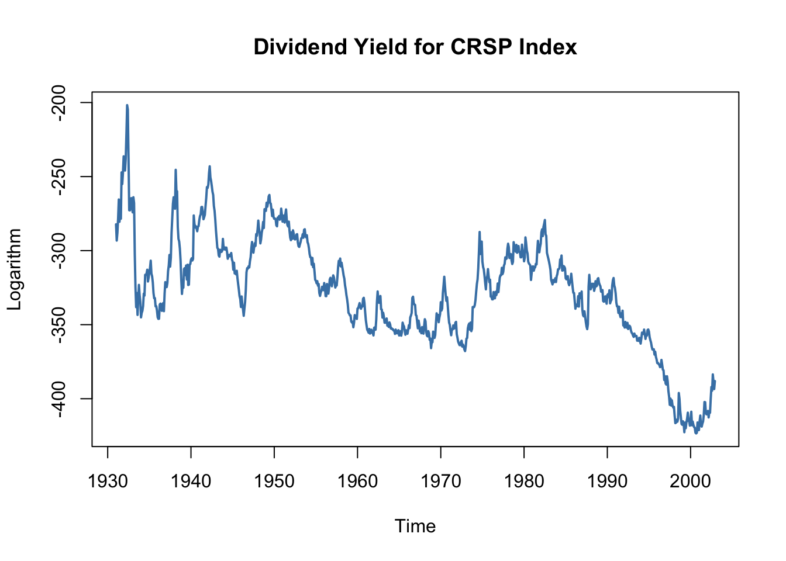

14.8 Nonstationarity II: Breaks
When there are discrete (at a distinct date) or gradual (over time) changes in the population regression coefficients, the series is nonstationary. These changes are called breaks. There is a variety of reasons why breaks can occur in macroeconomic time series but most often they are related to changes in economic policy or major changes in the structure of the economy. See Chapter 14.7 of the book for some examples.
If breaks are not accounted for in the regression model, OLS estimates will reflect the average relationship. Since these estimates might be strongly misleading and result in poor forecast quality, we are interested in testing for breaks. One distinguishes between testing for a break when the date is known and testing for a break with an unknown break date.
Let \(\tau\) denote a known break date and let \(D_t(\tau)\) be a binary variable indicating time periods before and after the break. Incorporating the break in an ADL(\(1\),\(1\)) regression model yields \[\begin{align*} Y_t =& \beta_0 + \beta_1 Y_{t-1} + \delta_1 X_{t-1} + \gamma_0 D_t(\tau) + \gamma_1\left[D_t(\tau) \cdot Y_{t-1}\right] \\ &+ \, \gamma_2\left[ D_t(\tau) \cdot X_{t-1} \right] + u_t, \end{align*}\] where we allow for discrete changes in \(\beta_0\), \(\beta_1\) and \(\beta_2\) at the break date \(\tau\). The null hypothesis of no break, \[H_0: \gamma_0=\gamma_1=\gamma_2=0,\] can be tested against the alternative that at least one of the \(\gamma\)’s is not zero using an \(F\)-Test. This idea is called a Chow test after Gregory Chow (1960).
When the break date is unknown the Quandt likelihood ratio (QLR) test (Quandt 1960) may be used. It is a modified version of the Chow test which uses the largest of all \(F\)-statistics obtained when applying the Chow test for all possible break dates in a predetermined range \(\left[\tau_0,\tau_1\right]\). The QLR test is summarized in Key Concept 14.9.
Key Concept 14.9
The QLR Test for Coefficient Stability
The QLR test can be used to test for a break in the population regression function if the date of the break is unknown. The QLR test statistic is the largest (Chow) \(F(\tau)\) statistic computed over a range of eligible break dates \(\tau_0 \leq \tau \leq \tau_1\): \[\begin{align} QLR = \max\left[F(\tau_0),F(\tau_0 +1),\dots,F(\tau_1)\right]. \tag{14.14} \end{align}\]
The most important properties are:
The QLR test can be applied to test whether a subset of the coefficients in the population regression function breaks but the test also rejects if there is a slow evolution of the regression function.
When there is a single discrete break in the population regression function that lying at a date within the range tested, the \(QLR\) test statistic is \(F(\widehat{\tau})\) and \(\widehat{\tau}/T\) is a consistent estimator of the fraction of the sample at which the break is.
The large-sample distribution of \(QLR\) depends on \(q\), the number of restrictions being tested and both ratios of end points to the sample size, \(\tau_0/T, \tau_1/T\).
Similar to the ADF test, the large-sample distribution of \(QLR\) is nonstandard. Critical values are presented in Table 14.5 of the book.
Has the Predictive Power of the term spread been stable?
Using the QLR statistic we may test whether there is a break in the coefficients on the lags of the term spread in (14.5), the ADL(\(2\),\(2\)) regression model of GDP growth. Following Key Concept 14.9 we modify the specification of (14.5) by adding a break dummy \(D(\tau)\) and its interactions with both lags of term spread and choose the range of break points to be tested as 1970:Q1 - 2005:Q2 (these periods are the center 70% of the sample data from 1962:Q2 - 2012:Q4). Thus, the model becomes \[\begin{align*} GDPGR_t =&\, \beta_0 + \beta_1 GDPGR_{t-1} + \beta_2 GDPGR_{t-2} \\ &+\, \beta_3 TSpread_{t-1} + \beta_4 TSpread_{t-2} \\ &+\, \gamma_1 D(\tau) + \gamma_2 (D(\tau) \cdot TSpread_{t-1}) \\ &+\, \gamma_3 (D(\tau) \cdot TSpread_{t-2}) \\ &+\, u_t. \end{align*}\]
Next, we estimate the model for each break point and compute the \(F\)-statistic corresponding to the null hypothesis \(H_0: \gamma_1=\gamma_2=\gamma_3=0\). The \(QLR\)-statistic is the largest of the \(F\)-statistics obtained in this manner.
# set up a range of possible break dates
tau <- seq(1970, 2005, 0.25)
# initialize vector of F-statistics
Fstats <- numeric(length(tau))
# estimation loop over break dates
for(i in 1:length(tau)) {
# set up dummy variable
D <- time(GDPGrowth_ts) > tau[i]
# estimate ADL(2,2) model with intercations
test <- dynlm(GDPGrowth_ts ~ L(GDPGrowth_ts) + L(GDPGrowth_ts, 2) +
D*L(TSpread_ts) + D*L(TSpread_ts, 2),
start = c(1962, 1),
end = c(2012, 4))
# compute and save the F-statistic
Fstats[i] <- linearHypothesis(test,
c("DTRUE=0", "DTRUE:L(TSpread_ts)",
"DTRUE:L(TSpread_ts, 2)"),
vcov. = sandwich)$F[2]
}We determine the \(QLR\) statistic using max().
Let us check that the \(QLR\)-statistic is the \(F\)-statistic obtained for the regression where 1980:Q4 is chosen as the break date.
# identify the time period where the QLR-statistic is observed
as.yearqtr(tau[which.max(Fstats)])
#> [1] "1980 Q4"Since \(q=3\) hypotheses are tested and the central \(70\%\) of the sample are considered to contain breaks, the corresponding \(1\%\) critical value of the \(QLR\) test is \(6.02\). We reject the null hypothesis that all coefficients (the coefficients on both lags of term spread and the intercept) are stable since the computed \(QLR\)-statistic exceeds this threshold. Thus evidence from the \(QLR\) test suggests that there is a break in the ADL(\(2\),\(2\)) model of GDP growth in the early 1980s.
To reproduce Figure 14.5 of the book, we convert the vector of sequential break-point \(F\)-statistics into a time series object and then generate a simple plot with some annotations.
# series of F-statistics
Fstatsseries <- ts(Fstats,
start = tau[1],
end = tau[length(tau)],
frequency = 4)
# plot the F-statistics
plot(Fstatsseries,
xlim = c(1960, 2015),
ylim = c(1, 7.5),
lwd = 2,
col = "steelblue",
ylab = "F-Statistic",
xlab = "Break Date",
main = "Testing for a Break in GDP ADL(2,2) Regression at Different Dates",
cex.main=0.8)
# dashed horizontal lines for critical values and QLR statistic
abline(h = 4.71, lty = 2)
abline(h = 6.02, lty = 2)
segments(0, QLR, 1980.75, QLR, col = "darkred")
text(2010, 6.2, "1% Critical Value",cex=0.8)
text(2010, 4.9, "5% Critical Value",cex=0.8)
text(1980.75, QLR+0.2, "QLR Statistic",cex=0.8)
Pseudo Out-of-Sample Forecasting
Pseudo out-of-sample forecasts are used to simulate the out-of-sample performance (the real time forecast performance) of a time series regression model. In particular, pseudo out-of-sample forecasts allow estimation of the \(RMSFE\) of the model and enable researchers to compare different model specifications with respect to their predictive power. Key Concept 14.10 summarizes this idea.
Key Concept 14.10
Pseudo Out-of-Sample Forecasting
Divide the sample data into \(s=T-P\) and \(P\) subsequent observations. The \(P\) observations are used as pseudo-out-of-sample observations.
Estimate the model using the first \(s\) observations.
Compute the pseudo-forecast \(\overset{\sim}{Y}_{s+1\vert s}\).
Compute the pseudo-forecast-error \(\overset{\sim}{u}_{s+1} = Y_{s+1} - \overset{\sim}{Y}_{s+1\vert s}\).
Repeat steps 2 trough 4 for all remaining pseudo-out-of-sample dates.
Did the Predictive Power of the Term Spread Change During the 2000s?
The insight gained in the previous section gives reason to presume that the pseudo-out-of-sample performance of ADL(\(2\),\(2\)) models estimated using data after the break in the early 1980s should not deteriorate relative to using the whole sample: provided that the coefficients of the population regression function are stable after the potential break in 1980:Q4, these models should have good predictive power. We check this by computing pseudo-out-of-sample forecasts for the period 2003:Q1 - 2012:Q4, a range covering 40 periods, where the forecast for 2003:Q1 is done using data from 1981:Q1 - 2002:Q4, the forecast for 2003:Q2 is based on data from 1981:Q1 - 2003:Q1 and so on.
Similarly as for the \(QLR\)-test we use a for() loop for estimation of all 40 models and gather their \(SER\)s and the obtained forecasts in a vector which is then used to compute pseudo-out-of-sample forecast errors.
# end of sample dates
EndOfSample <- seq(2002.75, 2012.5, 0.25)
# initialize matrix forecasts
forecasts <- matrix(nrow = 1,
ncol = length(EndOfSample))
# initialize vector SER
SER <- numeric(length(EndOfSample))
# estimation loop over end of sample dates
for(i in 1:length(EndOfSample)) {
# estimate ADL(2,2) model
m <- dynlm(GDPGrowth_ts ~ L(GDPGrowth_ts) + L(GDPGrowth_ts, 2)
+ L(TSpread_ts) + L(TSpread_ts, 2),
start = c(1981, 1),
end = EndOfSample[i])
SER[i] <- summary(m)$sigma
# sample data for one-period ahead forecast
s <- window(ADLdata, EndOfSample[i] - 0.25, EndOfSample[i])
# compute forecast
forecasts[i] <- coef(m) %*% c(1, s[1, 1], s[2, 1], s[1, 2], s[2, 2])
}# compute psuedo-out-of-sample forecast errors
POOSFCE <- c(window(GDPGrowth_ts, c(2003, 1), c(2012, 4))) - forecastsWe next translate the pseudo-out-of-sample forecasts into an object of class ts and plot the real GDP growth rate against the forecasted series.
# series of pseudo-out-of-sample forecasts
PSOSSFc <- ts(c(forecasts),
start = 2003,
end = 2012.75,
frequency = 4)
# plot the GDP growth time series
plot(window(GDPGrowth_ts, c(2003, 1), c(2012, 4)),
col = "steelblue",
lwd = 2,
ylab = "Percent",
main = "Pseudo-Out-Of-Sample Forecasts of GDP Growth")
# add the series of pseudo-out-of-sample forecasts
lines(PSOSSFc,
lwd = 2,
lty = 2)
# shade area between curves (the pseudo forecast error)
polygon(c(time(PSOSSFc), rev(time(PSOSSFc))),
c(window(GDPGrowth_ts, c(2003, 1), c(2012, 4)), rev(PSOSSFc)),
col = alpha("blue", alpha = 0.3),
border = NA)
# add a legend
legend("bottomleft",
lty = c(1, 2, 1),
lwd = c(2, 2, 10),
col = c("steelblue", "black", alpha("blue", alpha = 0.3)),
legend = c("Actual GDP growth rate",
"Forecasted GDP growth rate",
"Pseudo forecast Error"))
Apparently, the pseudo forecasts track the actual GDP growth rate quite well, except for the kink in 2009 which can be attributed to the recent financial crisis.
The \(SER\) of the first model (estimated using data from 1981:Q1 to 2002:Q4) is \(2.39\) so based on the in-sample fit we would expect the out of sample forecast errors to have mean zero and a root mean squared forecast error of about \(2.39\).
The root mean squared forecast error of the pseudo-out-of-sample forecasts is somewhat larger.
An interesting hypothesis is whether the mean forecast error is zero, that is the ADL(\(2\),\(2\)) forecasts are right, on average. This hypothesis is easily tested using the function t.test().
# test if mean forecast error is zero
t.test(POOSFCE)
#>
#> One Sample t-test
#>
#> data: POOSFCE
#> t = -1.5523, df = 39, p-value = 0.1287
#> alternative hypothesis: true mean is not equal to 0
#> 95 percent confidence interval:
#> -1.5078876 0.1984001
#> sample estimates:
#> mean of x
#> -0.6547438The hypothesis cannot be rejected at the \(10\%\) significance level. Altogether the analysis suggests that the ADL(\(2\),\(2\)) model coefficients have been stable since the presumed break in the early 1980s.